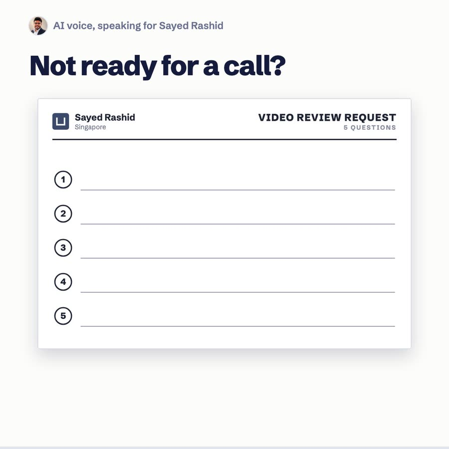
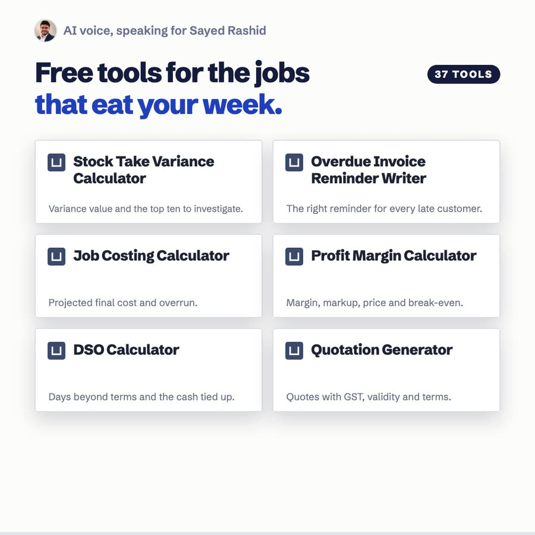

Your team types the same order three times. Let's find where.
A free 20-minute call. Bring one process that keeps breaking, and leave knowing where it leaks and what to fix first.
38 systems taken live· 91% of clients still with us· ex-auditor· 8 industries

86 seconds on what the free 20 minutes is and what you leave with. An AI voice, speaking for me.
Short on time? Watch the 24-second version
Free. Nothing to prepare. No pitch unless you ask.
In 20 minutes you leave with
- Where it's typed twice.The quote, the invoice, the delivery order: every place the same details get keyed in again.
- Where it waits on someone.The approvals, the chat messages, the "is it done yet?" that slow every order down.
- Three fixes, ranked by payoff.At least one needs no purchase. Or an honest "not yet", if it isn't worth fixing.
I've cleaned up this kind of mess before
Books nobody had closed in twenty years: 1,200 open items cleared at go-live.
S$176,000 of equipment that existed in the warehouse but not in the accounts.
Systems taken live across 8 industries
- Manufacturing
- Agriculture & plantations
- Retail & lifestyle
- Food & beverage
- Technology & engineering
- Printing & creative
- Trading & logistics
- Services & finance
How it works
- Pick a time.It goes straight into your calendar, with the Zoom link.
- Bring one process.Orders, quotes, stock, invoicing, month-end. Nothing to prepare.
- Leave with three ranked fixes.We walk it end to end together, and you keep the list.
Free. No pitch unless you ask. I take every call myself.
Not ready to talk?
You have used your 3 free tools. The full set stays open for people who ask for the 2-minute video or book the 20-minute review.

Get a two-minute video instead
Answer five short questions about the process. I record a two-minute video of where it leaks and email it within two working days. No call.
Ask for the video →
Use the free tools
37 calculators and templates. Type in your own numbers and get the answer on the spot. Your first 3 uses are open.
Open the tools →Is it for you?
Worth your time if…
- You run a Singapore business with roughly 5 to 200 people
- Trading, distribution, manufacturing, food & beverage, construction, accounting or other services
- Real operations today: spreadsheets, WhatsApp, a few disconnected apps
- You can name at least one process that regularly goes wrong
Probably not worth it if…
- You want a free written report to hand to a software vendor
- You're shopping for licence pricing: I'm not selling licences on this call
- Nothing is broken yet and you're just curious about AI
Questions
Is it really free?
Yes. Twenty minutes on Zoom, nothing to buy and no card. If the call is the only thing we ever do together, that's fine.
Will you pitch me?
No. No slides, no licence quote, no follow-up sequence. If you ask what working together would look like, I'll tell you. If you don't, the call ends with your three fixes.
Do I need to prepare?
No. Bring one process that keeps breaking. If you have rough numbers to hand, like orders a month or days to close the month, they help, but they're optional.
Is this only for Odoo?
No. The advice is vendor-neutral. I do implement Odoo, but if a spreadsheet or the tool you already use is enough, I'll tell you that.
What about the EDGE grant?
Eligible Singapore businesses can get up to 50% of a qualifying systems project funded under EDGE. Ask on the call and I'll tell you whether yours is likely to fit. What changed on 30 September →
One process. Twenty minutes. Three fixes.
Pick a time that suits you. Bring the process that hurt most last week.
Book the free 20 minutes →I take every call myself, so there are only so many each week.